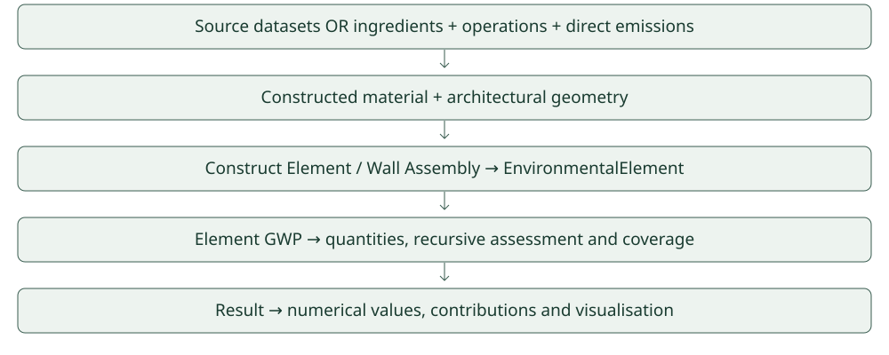

Start with a material
Resolve declared quantities before comparing impacts.
Development documentation · November 2026
RAW LCA connects architectural geometry to material datasets, authored recipes and manufacturing inventories. Inspect quantities, calculate supported impacts and keep missing data visible.

Resolve declared quantities before comparing impacts.
Ten material, manufacturing and architectural studies.
Existing source inventory and classification review.
Native wall evidence with explicit incomplete coverage.
Windows / Rhino 8 / .NET 8. Compile references target Rhino and Grasshopper 8.31. Earlier releases and other platforms are not verified.